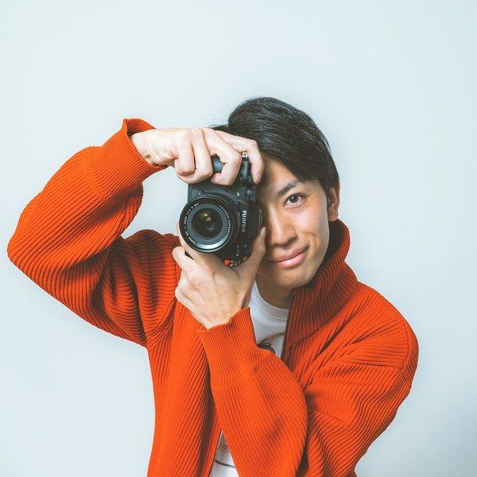
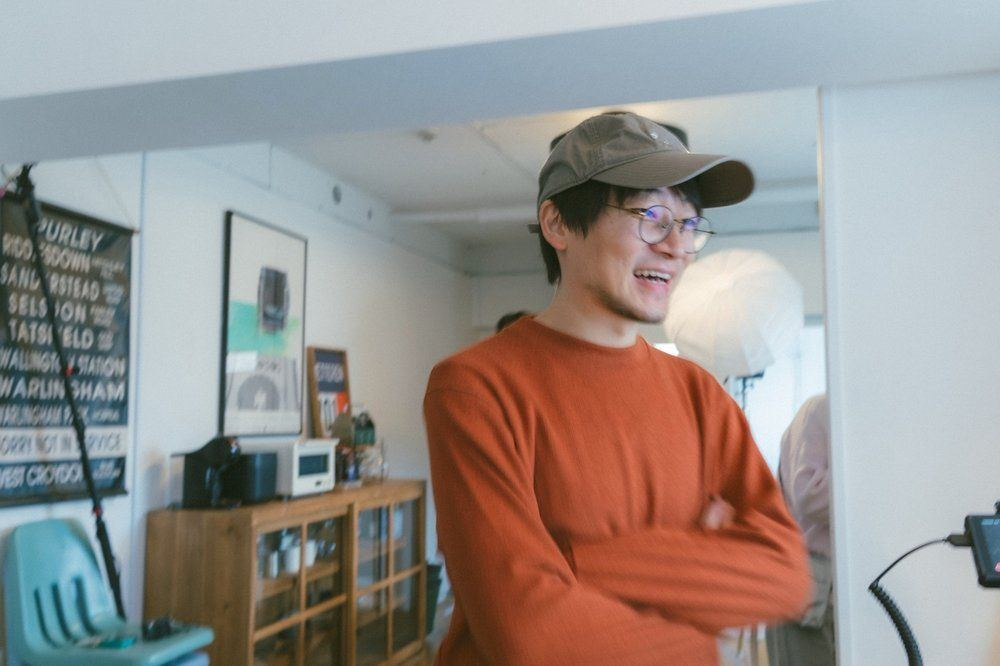
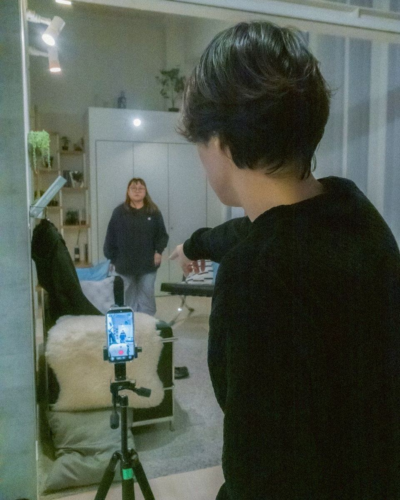
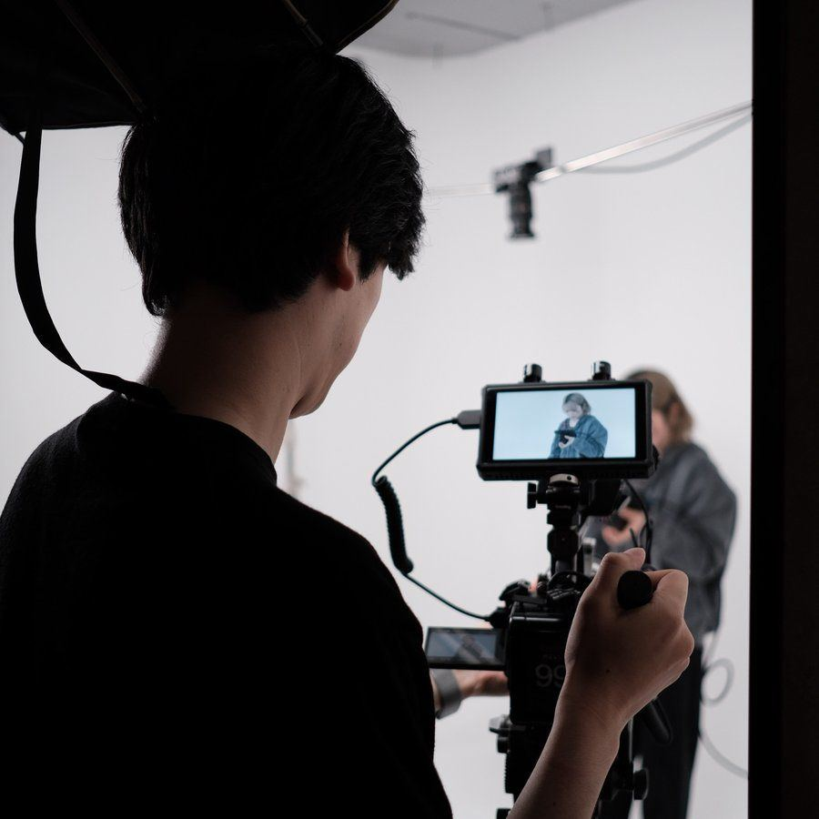
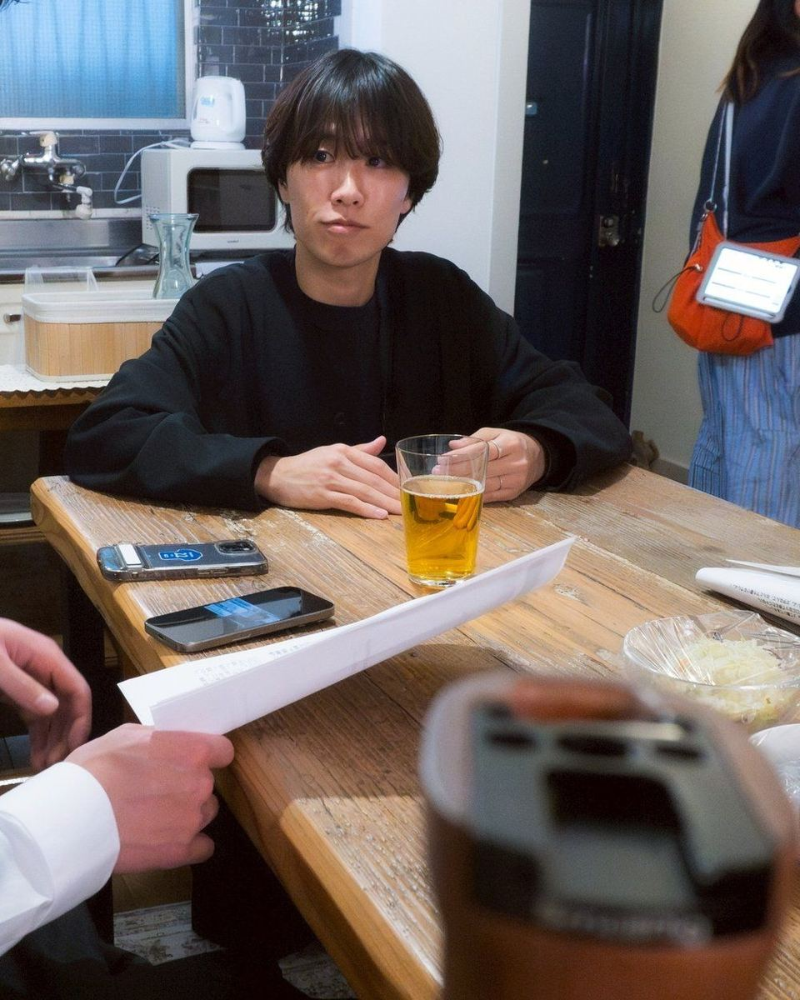
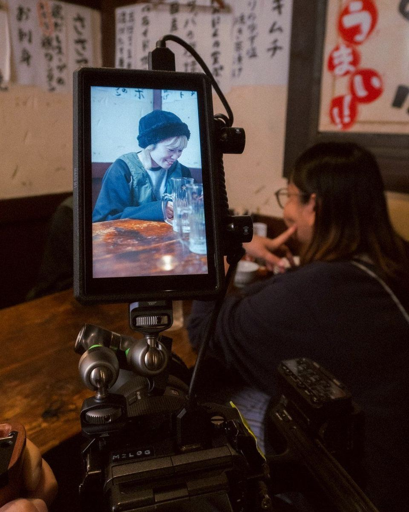
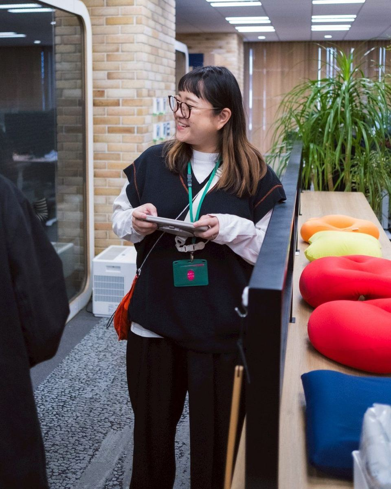
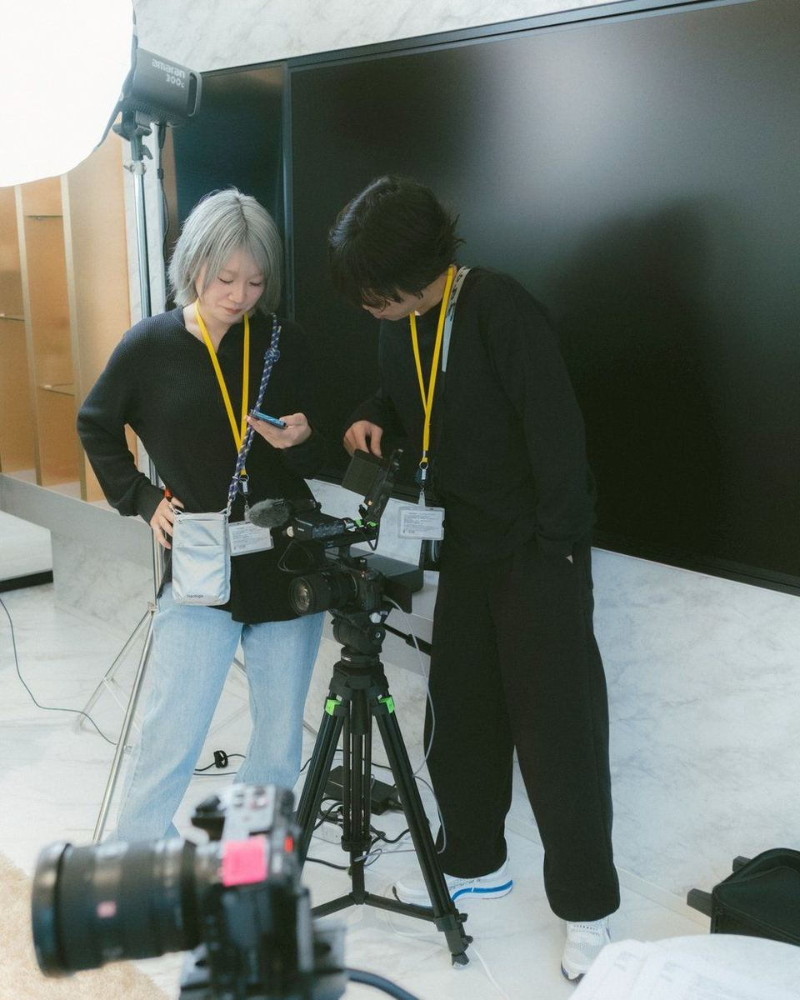
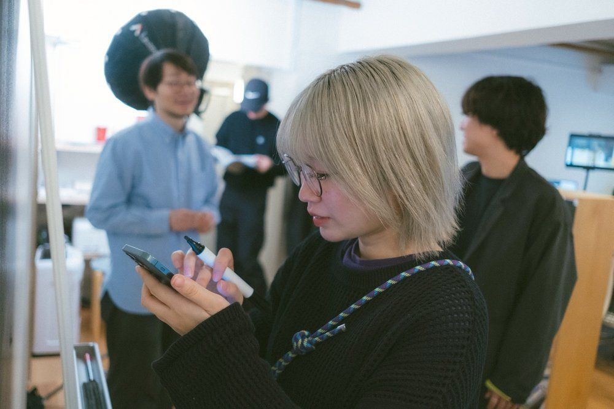

チームを紹介します。
テレビ、CM、スポーツ撮影。それぞれの現場から集まった5人です。
CEO／Creative Director
中村陵介
代表エンタメとマーケティングの掛け算で、成果から逆算する。
Creative Director
佐藤峻
元テレビディレクター編集まで見据えて撮る。ユーモアで、最後まで見せる。

Videographer／Photographer
川村敬亮
元スポーツカメラマンスポーツ撮影で鍛えた判断力で、一瞬の美しさを逃さない。
Editor／Art Director
佐藤可弥
元テレビディレクターアートと実用のあいだで、伝わる見せ方をつくる。
Producer
冨田祐子
元テレビ・CM制作テレビとCMで培った段取りで、チームを支える。
現場の空気感。








会社概要
| 会社名 | 株式会社M2Log |
|---|---|
| 代表者 | 代表取締役 中村陵介 |
| 設立 | 2024年10月 |
| 所在地 | 東京都江東区 |
| 事業内容 | 映像制作／SNSアカウント運用代行／映像マーケティング支援 |
| 対応媒体 | TikTok／Instagram／YouTube／Web広告 |
| 受賞歴 | 第13回 Brain Online Video Award（BOVA）オンライン動画部門 協賛企業賞（2026年） 「推して、秋田」映像コンテスト2026 準グランプリ |